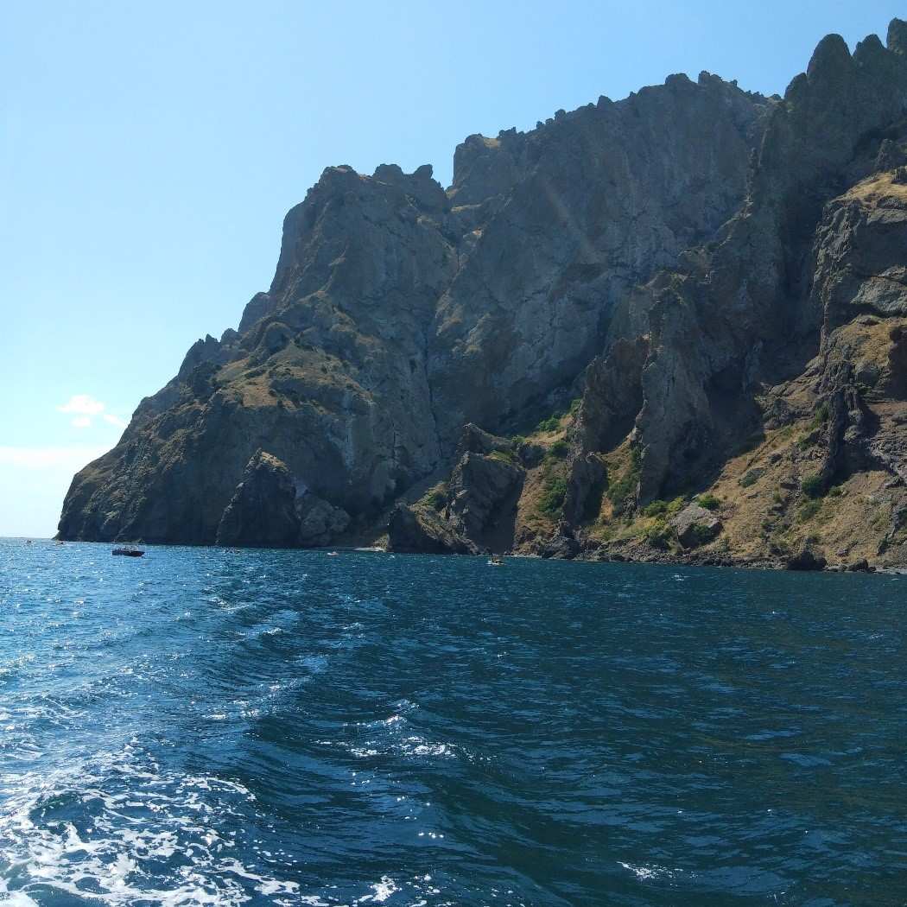
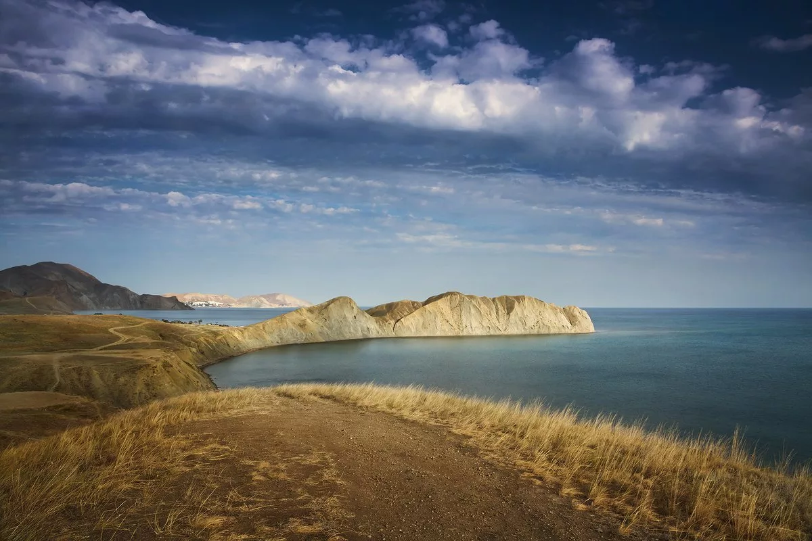
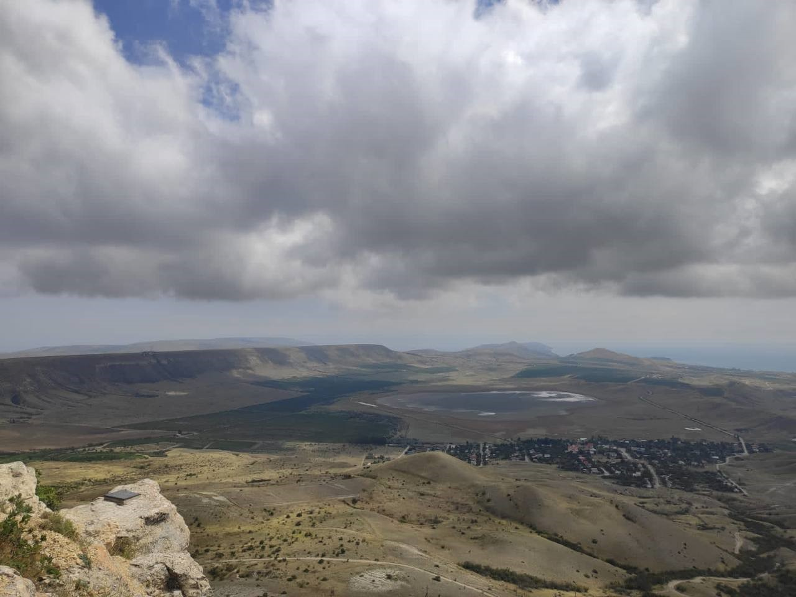

Кояшское озеро
Коя́шское озеро — солёное озеро морского происхождения на южном побережье Керченского полуострова, располагается в пределах территории Ленинского района.
Кояшское озеро по праву считается самым соленым озером Крымского полуострова. Максимальная минерализация озера наступает в конце июля и длится до середины августа, достигая 390 грамм на литр. Средняя за год минерализация составляет 360 грамм на литр.
Кояшское озеро относительно небольшое, но очень популярное среди туристов. Свою популярность озеро получило благодаря своему окрасу от красного до светло розового. Озеро меняет свой цвет по мере своего высыхания: чем суше стоит погода, тем цвет становится более насыщенным.
Причиной такого изменения в цвете послужила микроскопическая водоросль, которая обитает в водоеме. При фотосинтезе водоросль выделяет красные пигменты, которые и окрашивают воду, а при испарении воды и минералы, остающиеся на поверхности. Помимо красивого розового вида минералов, есть еще одна особенность этой водоросли: именно продукты ее жизнедеятельности обогащают минералы бета-каротином и йодом, что делает соль с Кояшского озера чрезвычайно полезной и ценной.
Что нужно знать туристу?
Озеро находится на заповедной территории, поэтому при посещении запрещается:
- Разводить костры;
- Собирать лечебную иловую грязь;
- Срывать растения;
- Беспокоить птиц и животных.
Как добраться?
Координаты GPS: 45.0480814, 36.1668044.
Добраться до Кояшского озера проще всего с Керчи: доехать до поселка Марьевка, а оттуда через заповедник пешком к озеру – это займет около 30 минут. Если Вы доберетесь на автомобиле, то едите в сторону поселка Приозерное, потом Огоньки Марьевка, Борисовка, а от Борисовки по грунтовой дороге к Опукскому заповеднику.
Где остановиться?
Многие туристы хотят провести отпуск рядом с Кояшским озером, для этого они пытаются снять жилье неподалеку. Но сделать это трудно, потому что рядом находится полигон и опукский заповедник. Чтобы быть совсем рядом с Кояшским озером, нужно брать с собой палатку. Кроме того, можно снять дом в Яковенково или Марьевке.
Казантипский заповедник
Казанти́пский приро́дный запове́дник - государственный природный заповедник, расположенный на крайнем севере Керченского полуострова на мысе Казантип. Включает в себя как территорию мыса Казантип, так и прибережно-аквальный комплекс. Он занимает одноименный мыс, геологические и природные особенности которого весьма своеобразны, что напрямую касается охраняемой зоны. Как полагают ученые, он образовался еще в среднем Палеолите, по геологической структуре он в большинстве представлен нестойким мшанковым известняком. Состоит он из прибрежной кольцевой гряды с низким и плоским углублением центральной котловины, чем чрезвычайно напоминает с виду атолл с пересохшей в глубокой древности лагуной, плескавшейся на нынешних степных просторах. Прибрежная часть сплошь изрезана крошечными заливчиками, а вся поверхность обрывистых и недружелюбных с виду склонов испещрена трещинами, воронками и другими карстовыми образованиями.
Что посмотреть в Казантипском заповеднике?
Он включает в себя: древнегреческое городище Гераклий, датированное II-I вв. до н.э., остатки усадьбы времён Римской империи, стены и земляные валы, следы античных искусственных террас и котловину, которая дала название всему полуострову Казантип.
Интересные факты:
- Казантипский полуостров изобилует многочисленными археологическими объектами, в южной его части, по праву называемой «Археологическим побережьем», были найдены: кремневые орудия среднего палеолита, неолитические стоянки, могильные курганы эпохи бронзы, античное городище Гераклий, руины римской усадьбы, следы сельхозугодий и искусственных террас античного времени;
- В районе г. Щелкино возможная сила землетрясения составляет 9 баллов, вследствие чего строительство Крымской АЭС было прекращено (1989 г.);
- В бухтах имеются выходы целебной голубой глины и кристаллов гипса;
- Пляжи примыкающего к заповеднику курорта общей протяженностью 25 км — одни из лучших в Крыму для отдыха детей (мелководные и теплые бухты);
- На Казантипе отсутствуют источники питьевой воды;
- На участках побережья сел Семеновка, Мысовое и Песочное распространены активные оползни;
- В центральной части мыса эксплуатируется небольшое Акташское месторождение нефти.
- Пешеходный - по участку целинной степи;
- Велосипедный - требует специальной подготовки;
- Конный -большого мастерства не требует, т. к. животные подготовлены и идут в сопровождении тренера;
Как добраться?
Координаты GPS: N 44.936111, E 35.233333.
Ближайшая точка, чтобы добраться до Казантипа – город Щелкино. Отсюда до мыса Казантип всего 2 км, которые можно пройти пешком или на автомобиле.
До заповедника можно доехать на автобусе или маршрутном такси от станции «Семь Колодцев» (п. Ленино) до с. Мысовое.
Где остановиться?
Частный сектор на Казантипе. Огромный выбор от маленьких летних флигелей до комфортабельных квартир в Щелкино. Выбирая такой вариант, обязательно обращайте внимание на водоснабжение: не во всех летних домиках есть централизованный водопровод.
Гостевые дома на Казантипе. Самый распространенный вид жилья. Мини-отели есть в каждом поселке, разница лишь в наборе предлагаемых услуг.
Гостиницы на Казантипе. Практически не отличаются от гостевых домов. В некоторых гостиницах есть дополнительные «бонусы» в виде собственного аквапарка или номеров класса люкс.
Генуэзская крепость
Генуэ́зская кре́пость — крепость в городе Судак, построенная генуэзцами как опорный пункт для своей колонии в северном Причерноморье.
Из всех укреплений, построенных итальянцами в Крыму, Генуэзская крепость в Судаке не только самая большая, но и лучше всего сохранившаяся. Не случайно каждый год ее посещают свыше 200 тыс. туристов, а кинематографисты постоянно используют для съемок ярких, динамичных сцен.
Режим работы генуэзской крепости:
Время работы Генуэзской крепости в Судаке: в летнее время с 8:00 до 20:00, в зимнее время с 9:00 до 18:00. Стоимость посещения — 150 рублей, детям — 75 руб.
Экскурсии:
В Генуэзскую крепость Судака можно попасть с групповым экскурсионным сопровождением. Стоимость одинакова для всех — 50 руб. За индивидуальную экскурсию на Судакскую крепость нужно будет заплатить 2 000 руб. Продолжительность составляет 40 минут. Групповые экскурсии в Генуэзской крепости Судака проводятся каждые 30 минут, с мая по сентябрь первая группа формируется в 09:15
Турнир в крепости
Каждый год на территории крепости проходит один из самых известных фестивалей рыцарского искусства — «Генуэзский шлем». Помимо непосредственно рыцарских турниров, в Генуэзской крепости Судака проводятся ярмарка ремесел, соревнования в кузнечном деле, владении стрелковым (арбалеты) и огнестрельным оружием (требушеты), выступления трубадуров.
Рыцарский турнир в Судакской крепости проходит с пятницы по воскресенье в течение нескольких недель в июле и августе. В нем принимают участие клубы исторической реконструкции из разных стран. На официальном сайте крепости можно найти расписание рыцарского турнира в Генуэзской крепости.
Как добраться?
Координаты GPS: N 45.022451, E 35.405492.
Главные ворота, через которые осуществляется вход на территорию, расположены в восточной части стены. Адрес Генуэзской крепости в Судаке: ул. Генуэзская крепость, 1. Сюда можно доехать на общественном транспорте: примерно в 250 метрах находится остановка «Уютное», до которой следуют: Автобусы № 5, 6. Маршрутное такси № 2.
На машине
Из центра города на автомобиле до Генуэзской крепости можно доехать за 10 минут, следуя по ул. Ленина, а затем — по Туристскому шоссе. По отзывам, у входа в Главные ворота, через которые можно попасть в Генуэзскую крепость Судака, оборудована платная парковка.
Пешком
Добраться до Генуэзской крепости из Судака можно пешком: дорога из центра займет около получаса. Многие направляются к достопримечательности от моря, поэтому их интересует вопрос: как пройти к Генуэзской крепости с набережной. Нужно пройти к началу ул. Набережная, подняться наверх по ул. Морская, свернуть налево к ул. Рыбачья и выйти к Туристскому шоссе.
Где остановиться?
Карадагский природный заповедник
Неподалеку от Феодосии расположен удивительный заповедник, с которым связано немало легенд. Кара-Даг («Черная гора») - это вулканический массив, последнее извержение которого произошло еще 150 млн лет назад. Сам же Карадагский заповедник, занимающий территорию в более чем 2870 га, был основан в 1979 году. Причем часть его площади приходится на акваторию Черного моря.
- Занимает территорию вулканического массива Кара-Даг.
- Основными целями работы заповедника являются изучение состояния биоразнообразия, мониторинг наземных и водных экосистем, а также экологическое просвещение.
- При заповеднике создан Музей природы и две экотропы: пешеходная и морская.
Экскурсии по заповеднику
Дирекция Карадагского заповедника предлагает экскурсии четырех видов на выбор и дает сотрудника в сопровождение. Вас проведут по таким местам, что воспоминания об их посещении останутся на всю жизнь. Подготовиться к прохождению маршрутов стоит заранее. Одеться спортивно и не забыть головной убор.
Первый маршрут - тропа имени доктора Т. Вяземского протяженностью 1,5 км и продолжительностью 45 минут, дает возможность ознакомиться с историей заповедника, его деятельностью, геологией Карадага, с хребтами Лобовой и Карагач, Северным перевалом и горой Малый Карадаг.
Второй маршрут - тропа «Большой Карадаг» длиною 7 км и продолжительностью 4 часа проходит по хребту Береговому до смотровых площадок, откуда видны во всей красе окрестности заповедника. В пути можно осмотреть визитную карточку заповедника скалу-арку Золотые Ворота, по слухам являющуюся порталом в иные миры, но только в определенные дни, скалу Иван-Разбойник, и гору Святая, пройти по ущелью Гяур-Бах.
Третий маршрут - вдоль потухшего вулкана. Прибрежная прогулка в 8 км от Карадагской бухты до мыса Мальчин. Здесь у каждого камня, скалы или бухточки своя история. Тут снимались шедевры советского кино «Алые паруса», «Человек-амфибия» и многих других, включая «Пиратов ХХ века».
Четвертый маршрут - «Дорога к сфинксу» длится три часа. Начинается и заканчивается в Коктебеле. Конечная его точка — хребет Магнитный, у скалы Чертов палец. Созерцание долин и окрестностей Коктебеля и его бухты, хребта Узун-Сырт и мыса Киик-Атлама сопровождается интереснейшим и занимательным историческим обзором.
Как добраться?
Координаты GPS: N 44.936111, E 35.233333.
К Карадагскому заповеднику можно добраться со стороны Феодосии через Коктебель, или от Судака через села Щебетовку и Курортное. Однако территория заповедная, поэтому попасть можно только в составе экскурсионной группы.
Остановиться можно в этих местах
Мыс Хамелион
Мыс Хамелеон – одна из исчезающих достопримечательностей Крымского полуострова. С 50-х годов прошлого века мыс потерял из-за обвалов и оползней около 35% своего объема. Мыс, носящий имя Хамелеон, образовался из отложений пепла, выброшенного вершиной Кара-Даг, когда она еще была вулканом. Он потух уже много столетий назад. Конфигурация мыса делает его похожим на приползшего к морю ящера. Свое название Хамелеон получил из-за постоянно меняющегося окраса и причудливой формы. Цвет мыса Хамелеон на прямую зависит от времени суток и погодных условий. В пасмурную погоду он синий или голубой, в солнечную – от желтого до светло-красного. Самые красивые кадры получаются на закате, мыс несколько раз меняет свой цвет. Причудливость формы мыса – торчащий из воды гребень – некоторым напоминает спину динозавра, некоторым хамелеона или игуану. Прогуляться по Хамелеону сейчас можно по тропинке, проходящей по центру хребта. Тропинка узенькая, но позволяет без затруднений пройти одному человеку. У самого края мыса открывается прекрасный вид на морскую акваторию Тихой бухты. Проход по тропе нетрудный, но с маленькими детьми туда идти не стоит, с обоих сторон от тропы - обрывы. Возле мыса Хамелеон находится множество диких пляжей. Вода в отличии от Коктебеля очень чистая и прозрачная, поэтому, собираясь в поход или на прогулку к мысу, возьмите принадлежности для купания. Максимальная высота мыса — 62 метра, уходит в море на 70 метров, максимальное сужение доходит до 2 метров.
Как добраться?
Координаты GPS: N 44.962574, E 35.294710.
На машине
Из поселка Коктебель нужно ехать в сторону поселка Орджоникидзе по восточной дороге (а не по окружной на севере поселка). По непростой дороге лучше всего ехать на внедорожнике.На общественном транспорте
Из крымского поселка Коктебель до мыса можно добраться наавтобусе от ост. «Завод «Коктебель» (далее пешком по грунтовой дороге к Тихой бухте).Можно также дойти до мыса пешком: дорога из поселка займет 50 минут. Нужно дойти по пляжу вдоль моря, мимо дельфинария, до окраины поселка на востоке и следовать по небольшой тропинке, которая выведет к главной дороге до мыса.Для желающих проехать на такси в Коктебеле действуют местные службы такси: например, «Коктебель».Остановиться можно в этих местах
- Отель Белый Грифон
- Отель Югра
- Отель Галеон
Гора Клементьева
Гора Клементьева (оригинальное название -Узун-Сырт) находится на Юго-Восточном побережье Крыма между городом Феодосия и посёлком Коктебель и представляет собой хребет длиной около 7 километров. Гора Клементьева -уникальное природное место с восходящими потоками воздуха. На всей планете таких мест всего два - в США и в Крыму. Благодаря своей изогнутой форме, на горе, словно разделяющей собою полуостров на горный и степной, образуются сильные воздушные потоки, на которых взмывают вверх дельтапланы, парапланы и планеры. В 1923 году на этом месте были проведены первые планерные испытания -слеты, положившие начало развитию планерного спорта. Через год Узун-Сырт переименовали в гору Клементьева в память об испытателе-планеристе Петре Клементьеве, который разбился здесь во время испытаний. На горе Клементьева (на территории центра планерного спорта «Коктебель») установили знак, сообщающий, что здесь проходит «45-я параллель — Золотая середина планеты Земля». Это место называют Золотой серединой, так как от него равное расстояние до экватора и северного полюса.
Планерские слёты
Именно 1 ноября на горе Клементьева, в Коктебеле, провели первые Всесоюзные планерные испытания, позже их стали называть слетами. Всего на горе Клементьева с 1923 по 1935 г. состоялось 11 слётов. Слеты проходили каждый год, осенью, и были большим событием. На слетах постоянно устанавливались новые мировые рекорды, проводились различные планерные испытания и появлялись новые имена в авиации. В 1924 г. Гора была названа в честь Петра Клементьева. Молодой летчик 11 сентября того года разбился во время 2-го слета планеристов на планере собственной конструкции. Он выполнял уже 23 полет, но планер треснул, крылья сложились, и летчик упал вниз с высоты 510 м.
Как добраться?
Координаты для GPS: 44°58′ с. ш. 35°15′ в. д.
Добраться до горы Клементьева удобнее всего на арендованном автомобиле или такси, поскольку гора находится в отдаленности от поселка.
Остановиться можно в этих местах
- Отель Эстет этно
- Отель Триера
- Отель Бриз